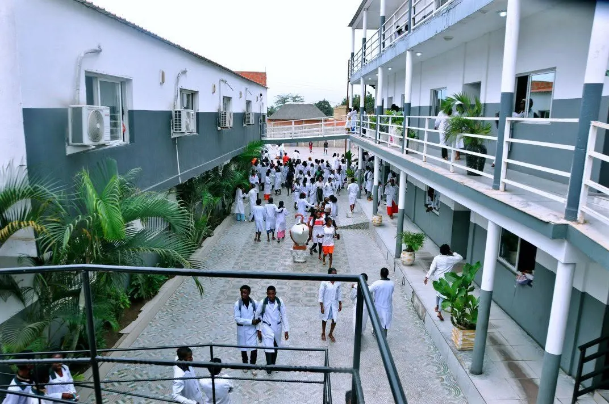

Galeria
O dia-a-dia no ITPSS, em imagens.
Estudantes, aulas práticas, laboratórios e actividades académicas do instituto.
- Início
- Galeria
Vida académica
Aulas, laboratórios e momentos do ITPSS.
Imagens do arquivo do instituto. A selecção pode ser actualizada com novas fotografias a qualquer momento.
Admissões
O teu futuro na saúde começa aqui!
Está preparado para dar o próximo passo na tua formação? Contacta o ITPSS e conhece as oportunidades disponíveis.